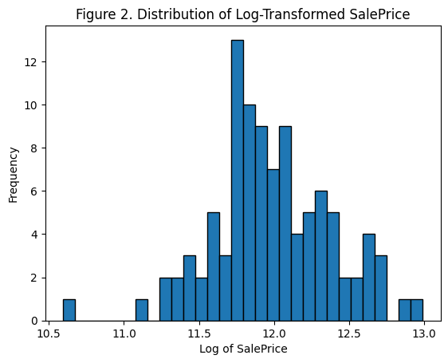
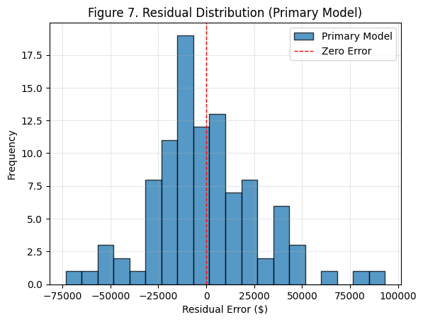
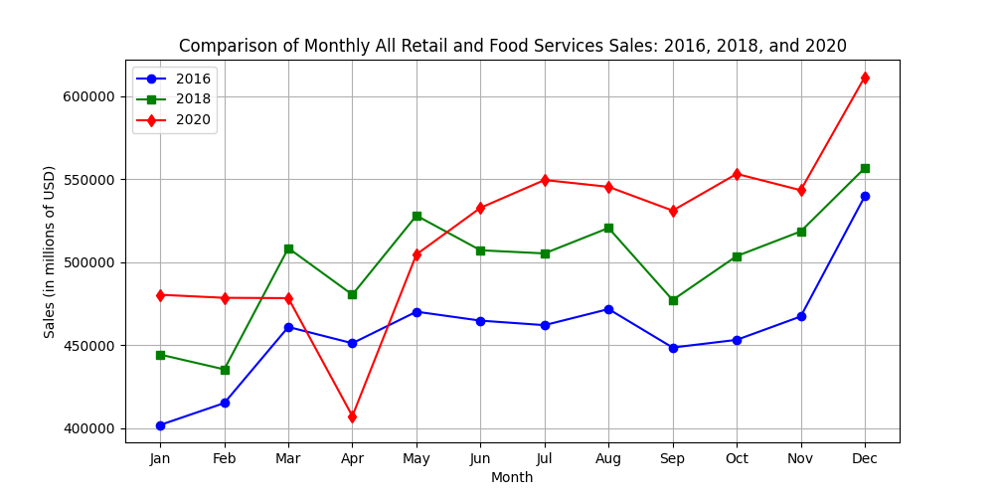
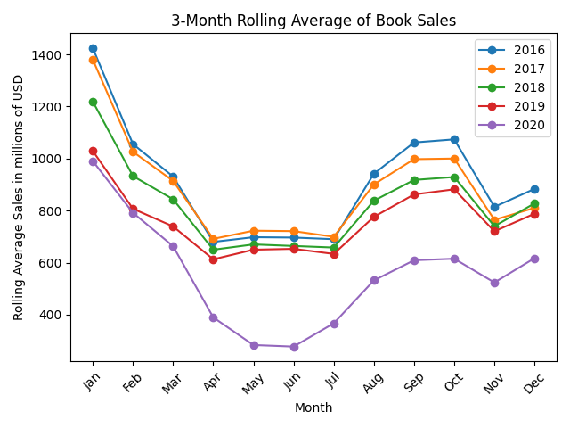
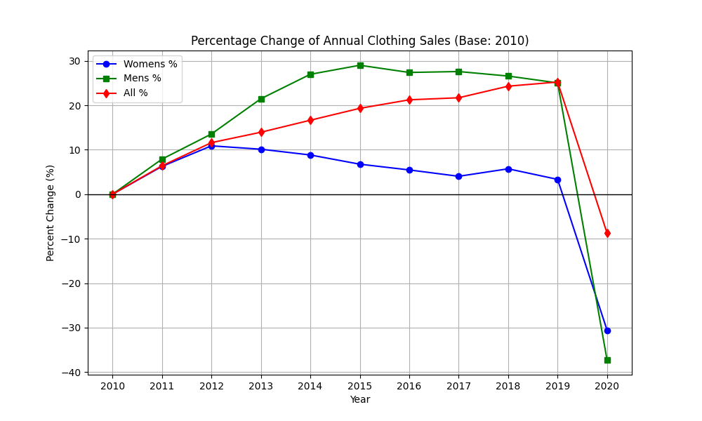

Housing Price Prediction Using Linear Regression
Developed and evaluated four linear regression models to predict housing sale prices using different feature selection strategies.
The study compared correlation-based, random, least-correlated, and domain-informed feature selection approaches to assess
predictive accuracy, model robustness, and generalization performance.
The strongest-performing model achieved an R² of 0.85 on training data and 0.82 on unseen test data, demonstrating strong predictive accuracy and generalization performance.
Tools: Python, Pandas, NumPy, Scikit-learn, Matplotlib, Jupyter Notebook



Time Series Analysis of U.S. Retail Sales (2010–2020)
Developed an end-to-end data engineering and analytics pipeline to analyze U.S. retail sales trends using the
Monthly Retail Trade Survey (MRTS). Designed a relational MySQL database, performed ETL processing of multi-year
datasets, and applied SQL and Python-based time series analysis to identify long-term trends, seasonality, and
COVID-19 impacts across retail sectors.
The analysis revealed distinct long-term divergence across retail sectors, with consistent growth in health-related
categories and sustained decline in book retailing. Strong seasonal patterns were identified across most categories,
and the impact of COVID-19 in 2020 produced a sharp, measurable disruption in monthly retail sales trends across multiple sectors.
Tools: Python, Pandas, NumPy, Matplotlib, Jupyter Notebook, SQL, MySQL, MySQL Workbench